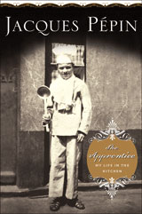

The Apprentice by Jacques Pépin

I just finished reading Jacques Pépin’s autobiography, The Apprentice, this weekend. It’s probably not something I would read if I didn’t work with Jacques, so I’m not going to actually recommend that anyone buy it, although my copy is always available for borrowing.
The Apprentice is a good read, and I was surprised by much of what I read. I always assumed that foreign chefs working in America were here because there was more money and fame to be had. This may be true to an extent, but Jacques is here because he seems to prefer the American way of life and eating. In France, for example, when a dish comes out of the kitchen, it is either right or wrong, and if it’s wrong, it will likely be sent back to the kitchen. He says that Americans are much more open to trying new things, probably because we have no classical cuisine to cling to. I like that idea. In general, he thinks Americans are more relaxed when it comes to hospitality and living in general, and that this style suited him better. I’m sure it didn’t hurt that there was a giant void in the US for gastronomy, and that he got here at the perfect moment.
I also learned that he opened a couple of restaurants. I thought he essentially went right from Le Pavillon to television and books. In fact, he opened a number of very successful restaurants in and around New York, most notably an upscale but cheap soup place in midtown called La Potagerie. It closed for a variety of reasons, notably an awful car accident he had in the 1970s.
He talks a good deal in the book about similarities between French and Black American cooking. When he got here, he and his French friends were disappointed in New York’s grocery stores because they lacked all but the most basic cuts of meat. Once he discovered Harlem’s offal counters, he started shopping uptown for his sweetbreads and pig’s trotters. He says that both cuisines grew out of necessity, that they were developed by poor rural people who couldn’t afford to let any part of the animal go to waste.
I loved reading about him cooking for French heads of state, and about him and his friends living in New York in the 50s and 60s, in a full floor apartment that they paid $75 a month for, partying with Helen McCully, Julia Child, and Craig Claiborne. What good times they must have had!
Comments
While you say you don’t recommend buying the book, your review makes me want to buy it! I can’t borrow yours since I’m here in Pittsburgh and it sounds fascinating. Of course, I do have a birthday coming up…
Mommy
Ha, you love reminding me that you have a birthday coming up, as if I didn’t already have it taken care of. xoxo
Add a comment